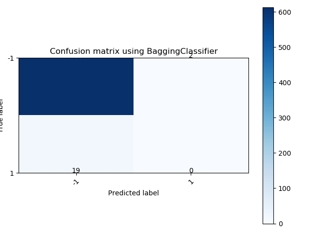
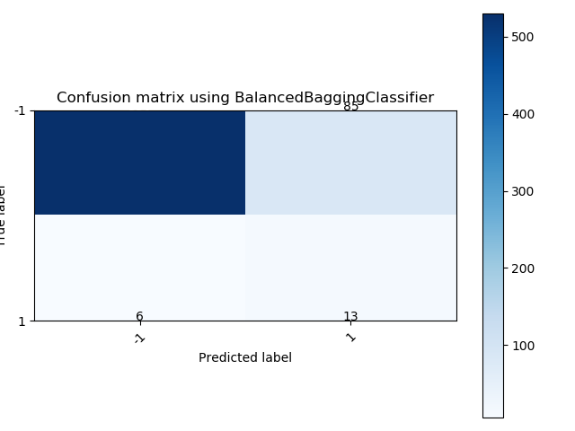

Note
Click here to download the full example code
Comparison of balanced and imbalanced bagging classifiers¶
This example shows the benefit of balancing the training set when using a
bagging classifier. BalancedBaggingClassifier chains a
RandomUnderSampler and a given classifier while BaggingClassifier is
using directly the imbalanced data.
Balancing the data set before training the classifier improve the classification performance. In addition, it avoids the ensemble to focus on the majority class which would be a known drawback of the decision tree classifiers.
# Authors: Guillaume Lemaitre <g.lemaitre58@gmail.com>
# License: MIT
from collections import Counter
import itertools
import matplotlib.pyplot as plt
import numpy as np
from sklearn.model_selection import train_test_split
from sklearn.ensemble import BaggingClassifier
from sklearn.tree import DecisionTreeClassifier
from sklearn.metrics import confusion_matrix
from imblearn.datasets import fetch_datasets
from imblearn.ensemble import BalancedBaggingClassifier
from imblearn.metrics import classification_report_imbalanced
def plot_confusion_matrix(cm, classes,
normalize=False,
title='Confusion matrix',
cmap=plt.cm.Blues):
"""
This function prints and plots the confusion matrix.
Normalization can be applied by setting `normalize=True`.
"""
if normalize:
cm = cm.astype('float') / cm.sum(axis=1)[:, np.newaxis]
print("Normalized confusion matrix")
else:
print('Confusion matrix, without normalization')
print(cm)
plt.imshow(cm, interpolation='nearest', cmap=cmap)
plt.title(title)
plt.colorbar()
tick_marks = np.arange(len(classes))
plt.xticks(tick_marks, classes, rotation=45)
plt.yticks(tick_marks, classes)
fmt = '.2f' if normalize else 'd'
thresh = cm.max() / 2.
for i, j in itertools.product(range(cm.shape[0]), range(cm.shape[1])):
plt.text(j, i, format(cm[i, j], fmt),
horizontalalignment="center",
color="white" if cm[i, j] > thresh else "black")
plt.tight_layout()
plt.ylabel('True label')
plt.xlabel('Predicted label')
ozone = fetch_datasets()['ozone_level']
X, y = ozone.data, ozone.target
X_train, X_test, y_train, y_test = train_test_split(X, y, random_state=0)
bagging = BaggingClassifier(random_state=0)
balanced_bagging = BalancedBaggingClassifier(random_state=0)
print('Class distribution of the training set: {}'.format(Counter(y_train)))
bagging.fit(X_train, y_train)
balanced_bagging.fit(X_train, y_train)
print('Class distribution of the test set: {}'.format(Counter(y_test)))
print('Classification results using a bagging classifier on imbalanced data')
y_pred_bagging = bagging.predict(X_test)
print(classification_report_imbalanced(y_test, y_pred_bagging))
cm_bagging = confusion_matrix(y_test, y_pred_bagging)
plt.figure()
plot_confusion_matrix(cm_bagging, classes=np.unique(ozone.target),
title='Confusion matrix using BaggingClassifier')
print('Classification results using a bagging classifier on balanced data')
y_pred_balanced_bagging = balanced_bagging.predict(X_test)
print(classification_report_imbalanced(y_test, y_pred_balanced_bagging))
cm_balanced_bagging = confusion_matrix(y_test, y_pred_balanced_bagging)
plt.figure()
plot_confusion_matrix(cm_balanced_bagging, classes=np.unique(ozone.target),
title='Confusion matrix using BalancedBaggingClassifier')
- 
- 
Out:
Class distribution of the training set: Counter({-1: 1848, 1: 54})
Class distribution of the test set: Counter({-1: 615, 1: 19})
Classification results using a bagging classifier on imbalanced data
pre rec spe f1 geo iba sup
-1 0.97 1.00 0.00 0.98 0.00 0.00 615
1 0.00 0.00 1.00 0.00 0.00 0.00 19
avg / total 0.94 0.97 0.03 0.95 0.00 0.00 634
Confusion matrix, without normalization
[[613 2]
[ 19 0]]
Classification results using a bagging classifier on balanced data
pre rec spe f1 geo iba sup
-1 0.99 0.86 0.68 0.92 0.77 0.60 615
1 0.13 0.68 0.86 0.22 0.77 0.58 19
avg / total 0.96 0.86 0.69 0.90 0.77 0.60 634
Confusion matrix, without normalization
[[530 85]
[ 6 13]]
Turning the balanced bagging classifier into a balanced random forest¶
It is possible to turn the
BalancedBaggingClassifierinto a balanced random forest by using aDecisionTreeClassifierwithmax_features='auto'. We illustrate such changes below.
balanced_random_forest = BalancedBaggingClassifier(
base_estimator=DecisionTreeClassifier(max_features='auto'),
random_state=0)
balanced_random_forest.fit(X_train, y_train)
print('Classification results using a balanced random forest classifier on'
' imbalanced data')
y_pred_balanced_rf = balanced_random_forest.predict(X_test)
print(classification_report_imbalanced(y_test, y_pred_balanced_rf))
cm_bagging = confusion_matrix(y_test, y_pred_balanced_rf)
plt.figure()
plot_confusion_matrix(cm_bagging, classes=np.unique(ozone.target),
title='Confusion matrix using balanced random forest')
plt.show()
Out:
Classification results using a balanced random forest classifier on imbalanced data
pre rec spe f1 geo iba sup
-1 0.99 0.90 0.58 0.94 0.72 0.54 615
1 0.15 0.58 0.90 0.24 0.72 0.50 19
avg / total 0.96 0.89 0.59 0.92 0.72 0.54 634
Confusion matrix, without normalization
[[554 61]
[ 8 11]]
/home/glemaitre/Documents/packages/imbalanced-learn/examples/ensemble/plot_comparison_bagging_classifier.py:124: UserWarning: Matplotlib is currently using agg, which is a non-GUI backend, so cannot show the figure.
plt.show()
Total running time of the script: ( 0 minutes 1.727 seconds)